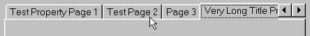
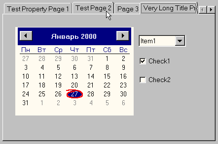
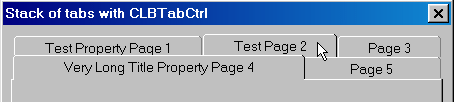

This article was contributed by Oleg Lobach.
Environment: The code was compiled with VC6 SP2, Win98 and tested with Win95 SP2, Win98 and NT4 SP3.
I think that default look of common CTabCtrl is not cool enough (for the year 2000), when control is used with scrolling tabs:

The CLBTabCtrl class uses my CLBSpinButtonCtrl class (see "Owner drawn spin button control with autodisabling arrow buttons" article) and completly draw itself to look like this:

Beside that, my CLBTabCtrl class has "autoraising items" feature. It means, that when mouse is over inactive item, that item is drawn higher then other inactive items and its right border became darker. This feature also persist when tab control is used in stacked mode:

#include "LBTabCtrl.h";
CLBTabCtrl m_LBTabCtrl;
BOOL CLBTabDemoPropSheet::OnInitDialog()
{
BOOL bResult =CPropertySheet::OnInitDialog();
//Subclass default CTabCtrl to CLBTabCtrl
CTabCtrl *pTab =GetTabControl();
m_LBTabCtrl.SubclassWindow(pTab->m_hWnd);
return bResult;
}
CLBTabDemoPropSheet sheet("Any Title");
CPropertyPage page1(IDD_PROPPAGE1),page2(IDD_PROPPAGE2),page3(IDD_PROPPAGE3);
sheet.AddPage(&page1);
sheet.AddPage(&page2);
sheet.AddPage(&page3);
// The following line is required if you wish to switch on
// the scrolling mode,since stacked mode is default
// for tab controls.
sheet.EnableStackedTabs(FALSE);
sheet.DoModal();
Note: Certainly you also can subclass any tab control, which does not lives within CPropertySheet.
The CLBTabCtrl is owner drawn tab control. To make its job this control handles the following messages:
Note: There is a possibility to switch off /on the "autoraising items" feature of CLBTabCtrl, using its public member function [bool SetAutoRaising(bool bOn)].
TRACKMOUSEEVENT stTRACKMOUSEEVENT; stTRACKMOUSEEVENT.cbSize = sizeof(stTRACKMOUSEEVENT); stTRACKMOUSEEVENT.hwndTrack=m_hWnd; stTRACKMOUSEEVENT.dwFlags=TME_LEAVE; _TrackMouseEvent(&stTRACKMOUSEEVENT);
CLBSpinButtonCtrl substitutes the common up-down control which used within CTabCtrl in scrolling mode.
CWnd* pWnd = GetWindow(GW_CHILD);
while(pWnd)
{
char buf[]="msctls_updown32";
intnRet= ::GetClassName(pWnd->m_hWnd,
buf,sizeof(buf)/sizeof(buf[0]));
if(nRet&&strcmp(buf,"msctls_updown32"))
{
pWnd=pWnd->GetWindow(GW_HWNDNEXT);
}
else
{
//The msctls_updown32 control isfound.
//
pWnd->GetWindowRect(&m_rectUpDn);
ScreenToClient(&m_rectUpDn);
//Update size and position of msctls_updown32 control
m_rectUpDn.DeflateRect(3,2);
m_rectUpDn.OffsetRect(3,5);
pWnd->MoveWindow(&m_rectUpDn);
//Subclass common msctls_updown32 control to
//my CLBSpinButtonCtrl, which have autodisabling arrow
buttons.m_Spin.SubclassWindow(pWnd->m_hWnd);
pWnd=0;
}
}
These messages are handled as reflected notification messages. After my handlers do the job, the parent window also get a chance to handle it.
DWORD dwStyle = ::GetWindowLong(m_hWnd,GWL_STYLE); if (dwStyle & WS_VISIBLE) ::SetWindowLong(m_hWnd, GWL_STYLE, (dwStyle & ~ WS_VISIBLE));//switch off WS_VISIBLE
a.) First of all to get rid of flickering I'm drawing to memory DC (dc). So I have to create compatible memory DC and select bitmap into it.
CPaintDC RealDC(this);
CDC dc;
CBitmap bmpMem,*pOldMemBmp;
rctPnt=dcReal.m_ps.rcPaint;
dc.CreateCompatibleDC(&RealDC);
bmpMem.CreateCompatibleBitmap(&RealDC,
rctPaint.Width(),rctPaint.Height());
pOldMemBmp=dc.SelectObject(&bmpMem);
// Since we are bypassing WM_ERASEBCKGND, by returning TRUE from its
//handler - let's do its job here
dc.FillSolidRect(&rctPaint,::GetSysColor(COLOR_BTNFACE));
b.) After that I check if current repaint has happened due to autoraised item. If so, I repaint only raised item.
c.) At the final step I copy the resulting bitmap from memory DC to the screen, using BitBlt with SRCCOPY ROP.
These files may be redistributed unmodified by any means providing it is not sold for profit without the authors written consent, and providing that the authors name and all copyright notices remains intact. This code may be used in compiled form in any way you wish with the following conditions:
If the source code is used in any commercial product then a statement along the lines of "Portions Copyright (C) 1999 Oleg Lobach" must be included in the startup banner, "About" box or printed documentation. The source code may not be compiled into a standalone library and sold for profit. In any other cases the code is free to whoever wants it anyway!
This software is provided "as is" without express or implied warranty.The author accepts no liability for any damages to your computer or data these products may cause.
Date Posted: January 28, 2000